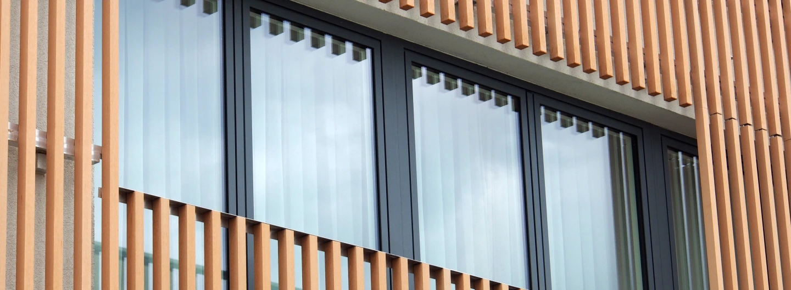

Kunskap som sitter
i både huvud och händer.
Tätning. Injektering. Bygg. Tre delar av vårt namn – och tre kompetenser som gör att vi kan se till hela ditt projekt.
Med rötterna i hantverket.
TiB Entreprenad har sin bas i Västerås och en historia som sträcker sig tillbaka till 1990. Vi utför tätning, injektering och byggarbeten för fastighetsägare, företag, kommuner och privatpersoner.
Injektering och fogarbeten tar oss till uppdrag över hela Sverige. Våra snickare arbetar framför allt i Västerås med omnejd, med allt från mindre renoveringar till totalentreprenad.
Tobias Thorén.
Sedan 2021 leds företaget av Tobias Thorén. Med över 20 års erfarenhet som snickare har han med sig en praktisk förståelse för både detaljerna och helheten i ett bygge.
Behöver du diskutera ett projekt? Ta en direktkontakt med Tobias så ser vi vad nästa steg kan vara.
Grunden läggs.
Historien börjar med Injo Fog & Golv AB och Sonny Larsson. Injektering och fogarbeten lägger grunden till verksamhetens specialistkunskap.
Verksamheten växer.
Under Otto Bråtnäs och namnet Sura-fog och Golv AB utvecklas företaget vidare, med fler medarbetare och kundrelationer.
Ett nytt kapitel.
Tobias Thorén tar över och fortsätter utvecklingen. I dag samlas kompetenserna under namnet TiB Entreprenad.
Erfarenhet av miljöer
som måste fungera.
Vi har erfarenhet av uppdrag inom bostäder, industri och offentlig verksamhet. Bland våra samarbeten finns NCC, Skanska, Peab, Akademiska sjukhuset, Region Västmanland och Region Sörmland.
Det som förenar arbetena är behovet av ett noggrant utförande och en fungerande dialog genom projektet.

En lösning ska
fungera på riktigt.
Vi börjar med att lyssna och undersöka. Sedan går vi igenom vad som behöver göras, förutsättningarna för arbetet och hur vi kan genomföra det.
Oavsett om du behöver täta en spricka eller samordna ett helt bygge ska kontakten vara enkel och nästa steg tydligt.
Låt oss prata om ditt projekt